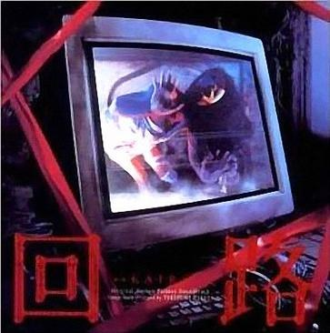

Requirements


Course Requirements
YOUR GRADE
Quizzes 10%
Group Project 20%
DISCUSSION BOARD 10%
MID TERM 30%
FINAL TERM 30%
What’s that on the horizon? A lurking presence... Could it be? Yes, it’s a DEADLINE!
Requirements
WEEKLY Homework:
Do it. It is as easy as one, two, three…
1.READ
You are responsible for completing the week’s readings prior to class. Take notes, underline, outline. Come to class with questions, opinions, and thoughts on the readings.
Most readings will be provided via links from the course website. The following readings are available for purchase at the university bookstore:
FAUST 1
Nagaru Tanigawa, The Melancholy of Haruhi Suzumiya
Otsuichi, ZOO
Murakami, Hard Boiled Wonderland
Hoshino, Lonely Hearts Killer
Azuma, Otaku
Saito, Fighting Girl
The instructor reserves the right to give pop quizzes on the readings if students seem not to be keeping up with the assignments.
2. WATCH
As a portion of your homework each week you are responsible to watch a film or several episodes of a TV show on reserve at the library or available freely over the internet. For your convenience an OPTIONAL screening time for the class has been set for TUESDAY MORNINGS 9AM-NOON. RM 214. PATEE Library. 2nd Floor. Capacity 15. (Questions call (814) 865-3616)
IF YOU OPT NOT TO WATCH A FILM DURING THE SCREENING TIME, YOU ARE STILL RESPONSIBLE TO WATCH ONE OF THE FILMS or SHOWS LISTED ON THE SYLLABUS FOR THAT WEEK. THE SET SCREENING TIME IS OPTIONAL. WATCHING IS NOT OPTIONAL.
DVDs are on reserve at the Media Center in the Library.
3. POST
You must participate in at least 10 discussions as a respondent or discussion leader on the discussion boards throughout the semester. Do this only after you have completed 1 Reading and 2 Watching above.
Sign Up for Discussion Leader here. By Jan 27.
GRADING
Pop Reading Quizzes 10%
Pop quizzes may be given at anytime throughout the semester on a given week’s readings. Quizzes will be given when only a few students are participating in discussion or when it appears only a few students have completed the reading assignments for the week.
A student’s lowest 1/3 of scores will be dropped before the pop quiz average is derived and entered into your final grade.
Since one third of the quizzes may be dropped there will be no make up quizzes for lateness or absentee-ism.
Group Project 20%
Groups of no more than 10 will present their research on topics related to but not specifically covered by course materials. 1/2 (or 10%) of the grade for this project will be based on an in-class presentation. 1/2 (or 10%) will be based on their presentation of materials on the website.
Each group member is responsible for their own signed component of the project. Individual/not group grades will be given.
Presentations for JAPNS 121 will generally happen on Tuesdays.
For details on this project assignment, see Project Guidelines Handout. For details on assessment of your projects, see Project Rubric. SIGN UP FOR GROUP HERE. By JAN 27.
Discussion Board 10%
Students are expected to participate in an electronic newsgroup (bulletin board), discussing their thoughts on the readings and class discussions. Topics and the manner of the discussion will be decided by DISCUSSION LEADERS. Each and every student will take a turn being a discussion leader. You will have free rein here to discuss topics that do not get raised in class or in the readings. This is a chance to find out what your classmates think about your ideas. It is also a chance for those who are less talkative in class to recover some points for participation.
A given week's discussion leaders must write and send at least two paragraphs (10 sentences) by SUNDAY at midnight. They should be sure to quote from the following week’s readings and also cite specific scenes or characters from one of the coming week’s films or anime episodes.
DISCUSSANTS (that is, everyone else) must write at least one response by the following WEDNESDAY at midnight. Responses may be any length five sentences or over. They can respond to any one or all of the discussion leaders for a given week.
All students must SIGN UP for a week to be a DISCUSSION LEADER by the third week of class.
Exams 60%
The two exams (a Mid Term (30%) and the Final Exam (30%)) will follow the same format:
1) identify and provide the significance of 10 key terms, ideas, issues or expressions out of a total of 15 given; 2) Short Answer questions..
In cultural criticism your gut feeling may turn out to be mistaken. When you look at these images, you might think...
Too Cute?
Too Cool?


Too Scary?
Too Happy?
The criteria that we use to make judgements about foreign products are culturally constructed. Learning about Japanese pop culture will make sense of some of what our instincts may at first say is bizarre. So how do we maintain our own cultural identity while trying to understand another? Should we even want to maintain one, singular identity? Is there ever such a thing as one singular identity?
REMEBER
READ
WATCH
POST